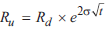
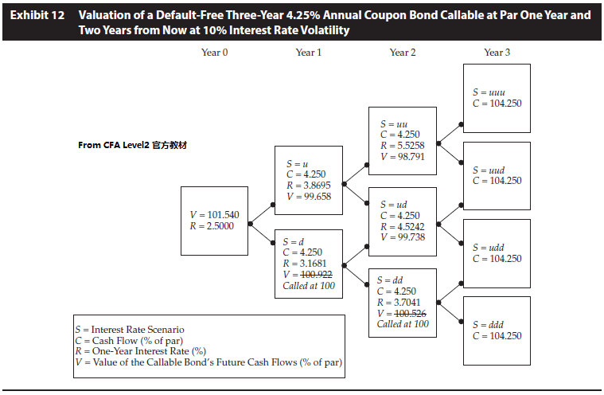
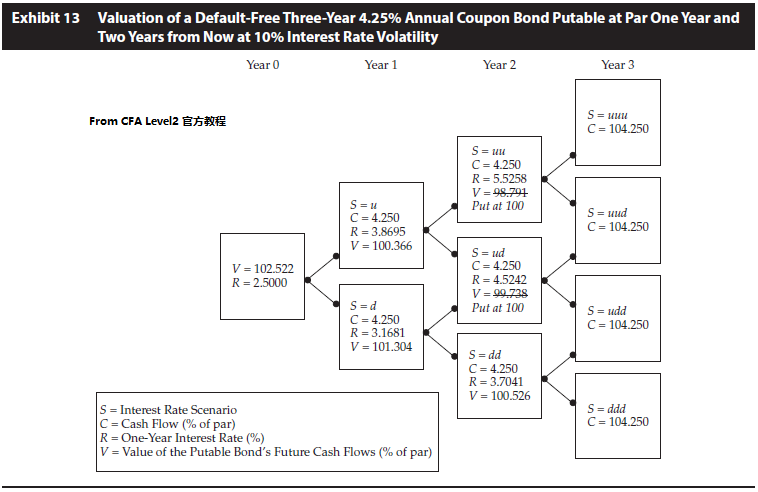
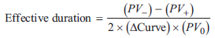
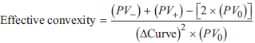

--------------------
含权债券
--------------------
- options in bonds
- straight bond
- callalbe, Vc = Vstraight - Vcall option
- putable, Vp = Vstraight + Vput option
- extendible bond 可扩展权, 当put权债券到期时, 可以继续保留几年
- convertible
- estate put, 又叫 survivor's option 债权人死后即可回售
- sinking fund bond, 又叫 sinker, 偿债基金债券, 定期预留一些资金用于归还本金
- 无违约 callable / putable

callalbe 去掉V大于100的路径

putable 去掉V小于100的路径

- 有违约风险的 callable / putable
- OAS option-adjusted spread
- Z-spread, zero-volatility spread, z-spread=债券利率-国债利率
- OAS = z-spread剔除权的影响后的spread
- 如果OAS小于0, 债券被高估, 因为利差小, 投资人的获利更少
- 如果OAS大于0, 应比较实际OAS和要求OAS, 如果实际OAS相对较小, 债券被高估
- 以发行人债券为基准时, 要求OAS=0
- 久期
- 有效久期

- callable 和 putable的有效久期不会超过straight bond
- 零息债, 有效久期=修正久期≈麦考利久期=债券到期
- 固定利率, ED=MD≈麦考利久期<债券到期
- callable/putable, ED ≤ MD(straight)
- callable, 单边上久期 > 单边下久期
- putable, 单边下久期 > 单边上久期
- 浮动利率债券, ED≈下一个重置期
- 有效凸度

- 浮动利率债券
- capped floater, Vcap = Vstraight - Vembedded cap
- floored floater, Vfloor = Vstraight + Vembedded floor
- 可转债
- conversion value = underlying share price × conversion ratio
- 市场转换价 = 可转债价格 / 转换率
- 市场转换溢价 = 市场转换价 - 股价
- 市场转换溢价率 = 市场转换溢价 / 股价
- Vconvertible option = + value of call option on the issuer's stock
- 风险收益特征
- 低股价时, 如同普通债券, bond equivalent, busted convertible
- 高股价时, 如同股票, stock equivalent
- 其他情形hybrid
- 债券分析注意事项
- check put-call parity holds
- check value of option-free
- check volatility term structure slopes downward
--------------------
Next Chaptor